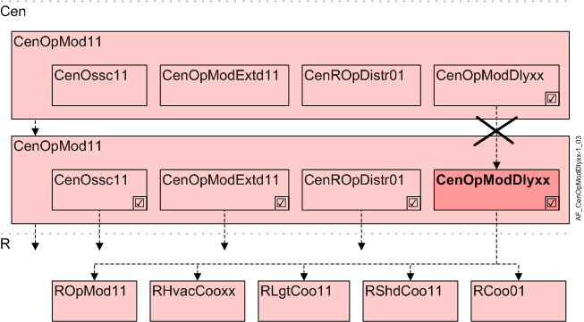

中央操作模式延迟 (CenOpModDly11...13)
Overview
应用功能》Central operating mode delay 11...13"（CenOpModDly11...13) 在更改整个组的操作模式时，将中央操作模式以及具有时间延迟的相关数据分配给多个分阶段启动组，以将电气启动负载（HVAC 植物、百叶窗、照明）分配到多个分阶段启动组。
延迟分配包括分组“中央操作模式”的所有元素，即 AF CenOpMod11 的所有输出以及所包含的 AFs CenOssc11、CenOpModExtd11、CenROpDstr01。
延迟的AFs用于分配给所有房间，但不能用于分配给下级AFsCenOpModDly11...13.

岑 | 中央职能 |
CenOpMod11 | Central operating mode determination 11 |
CenOpModDly11...13 | Central operating mode delay 11...13 |
R | 房间 |
ROpMod11 | Room operating mode determination 11, with comfort button |
RHvacCooxx | Room HVAC coordination set 11, for fan coil unit, radiant ceiling, radiator, radiant floor / 12 / 13 / 17 |
RlgtCoo11 | Room lighting coordination 11 |
RshdCoo11 | Room shading coordination 11 |
RCoo01 | Room coordination 01(V5.1 / V5.1SP) |
Function
第一个启动组 (CenOpMod11) 在操作模式更改后立即启动。中央操作模式延迟 11 至 13 (CenOpModDly11...13) 的启动组具有可调节的延迟时间，并在延迟到期后立即启动。
Interface to local and superordinate functions
没有额外的 BACnet 对象用于延迟分发。下属AFsCenOpModDly11...13 通过内部通信从上级 AF 中包含的 AFs CenOssc11、CenOpModExtd11、CenROpDstr01 接收输入CenOpModDly11...13.
Configuration
 Object
Object
描述 | 目的 | 类型 | 默认值 |
|---|---|---|---|
Central operating mode delay 1...3 0...7200 [s] | CenOpModDly1...3 | UCnfVal | CenOpModDly1: 10 [秒] CenOpModDly2: 20 [秒] CenOpModDly3: 30 [秒] |
Interface
界面 | 描述 | 类型 | 参考号 | 所有者 |
|---|---|---|---|---|
CenOpModMstd1...3 | Manager for central operating mode delay 1...3 | GrpMaster | ● | - |
CenOpModDly1...3 | Central operating mode delay 1...3 | UCnfVal | ● | - |
Engineering and commissioning
AFs 从 CenOpMod11 接收值（图表接口）。每个更改都保存在缓冲区中。 AFs 在延迟时间到期后从缓冲区读回值并解码并将它们分发给连接的组成员。